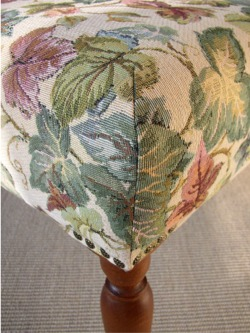
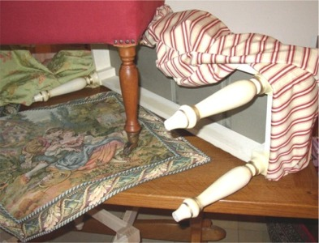

FOOTSTOOL
Beine und Rahmen sind aus hochwertigem
Buchenholz. Der Holzrahmen ist verzahnt und geleimt.
(Beine NICHT geschraubt) Die exakte Verarbeitung gewährt eine hohe
Belastbarkeit und
Freude für viele Jahre an Ihrem Footstool.
JEDER
Footstool wird individuell gefertigt - in Länge, Breite und Höhe
- exakt nach Ihren
Wünschen und Bedürfnissen. Sie wählen auch den Farbton
der Beine - und natürlich den Stoff!
 
STOFFE
Gerne verwenden wir Ihren eigenen
Stoff! So erhalten Sie ein Möbelstück passend zu
Ihrer bestehenden Einrichtung. Natürlich bieten wir die
Footstools auch so an, wie sie
hier abgebildet sind. Bitte fragen Sie uns, ob die gezeigten Bezugsstoffe
noch im Programm sind
Rollen 
Wir verwenden nur massive Messing- Rollen
von bester Qualität. Die Messingrollen
sind für alle gedrechselten Beine verfügbar
und kosten € 150 per Footstool.
LIEFERZEIT
Da jeder Footstool individuell gefertigt wird, kann
die Lieferzeit 5 Wochen nach Auftragseingang
betragen. Dies wird bei der Bestellung aber individuell abgesprochen.
ZAHLUNG / KOSTEN
Zusätzlich zu den angegebenen Preisen
berücksichtigen Sie bitte eine
Versandkosten-Pauschale von € 8.
Per Vorausüberweisung: Volksbank
Nordheide
Konto:
4040 309 200 BLZ: 240 60 300
Per Vorausscheck
Per Nachnahme (zzgl. Gebühr)